Main Menu¶
In this chapter we are going to learn about the Main Menu

Program Steps¶
After selecting the (Main Menu) template, we will get the next steps in the Goal Designer

The Steps Tree:
While True
Print (New Line)
Print Main Menu (New Line)
Print -------------- (New Line)
Print (1) Say Hello (New Line)
Print (2) About (New Line)
Print (3) Exit (New Line)
Print (New Line)
Input nOption
Switch nOption
Case 1
Print Hello! (New Line)
Case 2
Print Just a simple program! (New Line)
Case 3
Print End of program! (New Line)
Shutdown 0
Else
Print bad option... (New Line)
End of Switch
End of While Loop
Creating the Program¶
To create this program we will use the next components
While
Print Text
Get Input
Switch
Case
Shutdown
Else
In the begining the Steps Tree is empty
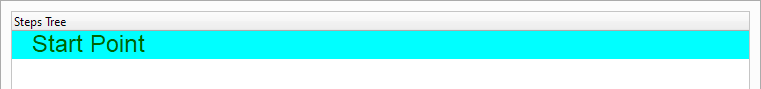Select the (While Loop) component

Enter the data in the Interaction Page

The Steps Tree will be updated
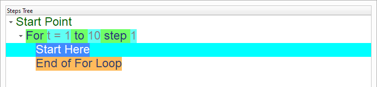Select the (Print Text) component

In the Interaction Page, Just click OK
We will print an empty line!
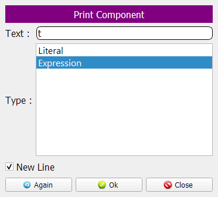The Steps Tree will be updated
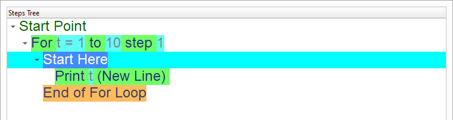We will print the Menu Items
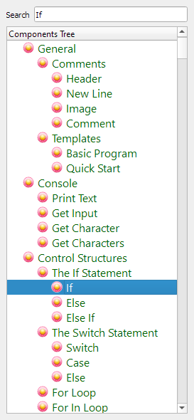 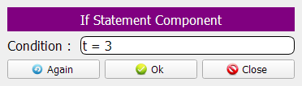 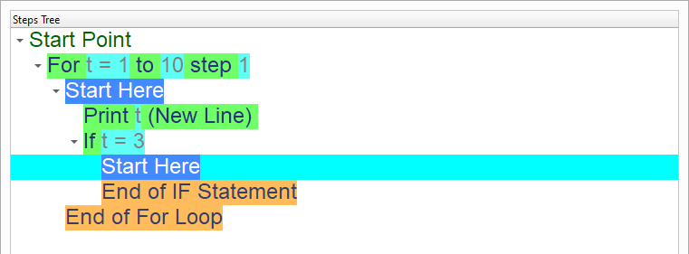
 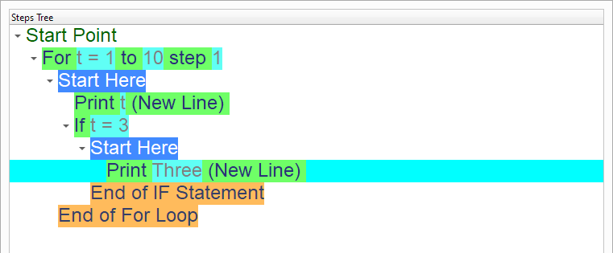
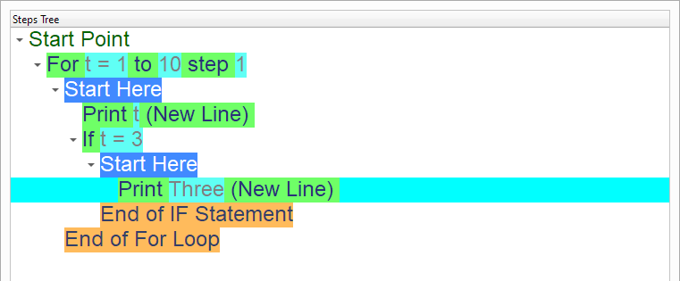


 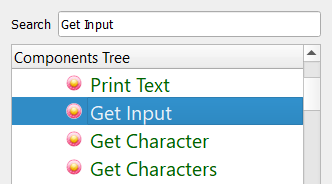
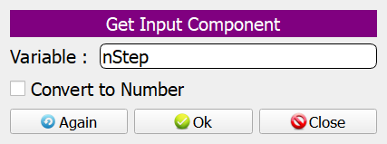
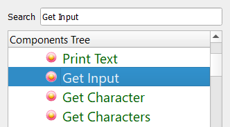
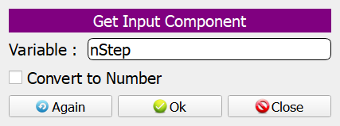


 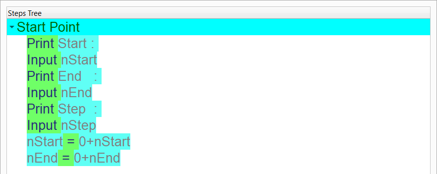
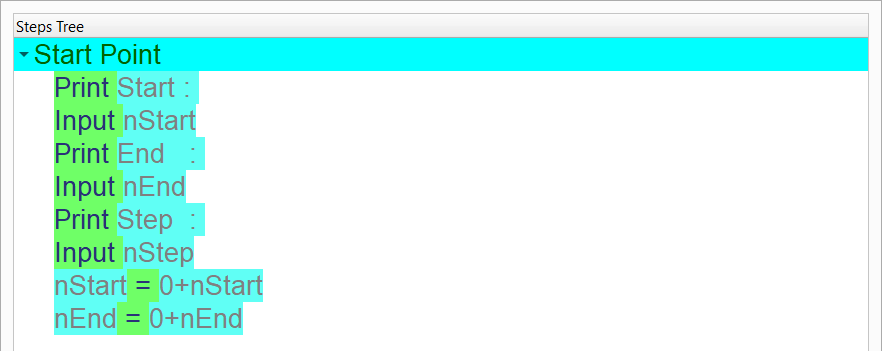
Select the (Get Input) component

We will use the (nOption) variable to get the input from the User!
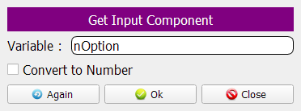Using (Switch) we will determine what to do based on the selected option


 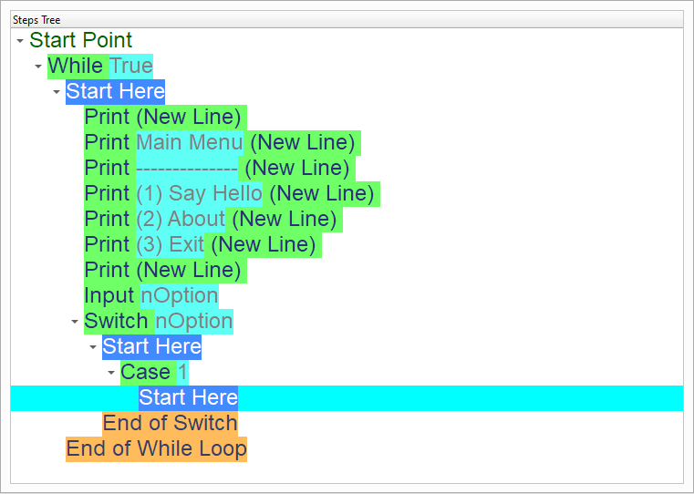
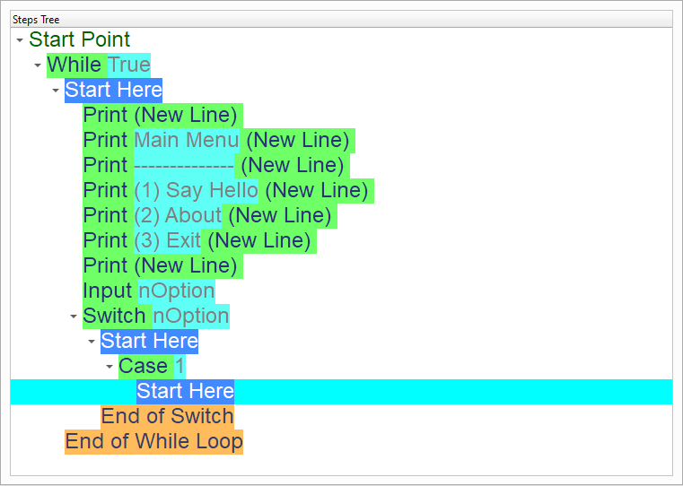


 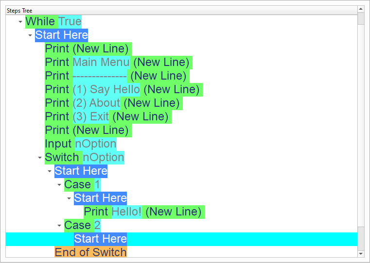
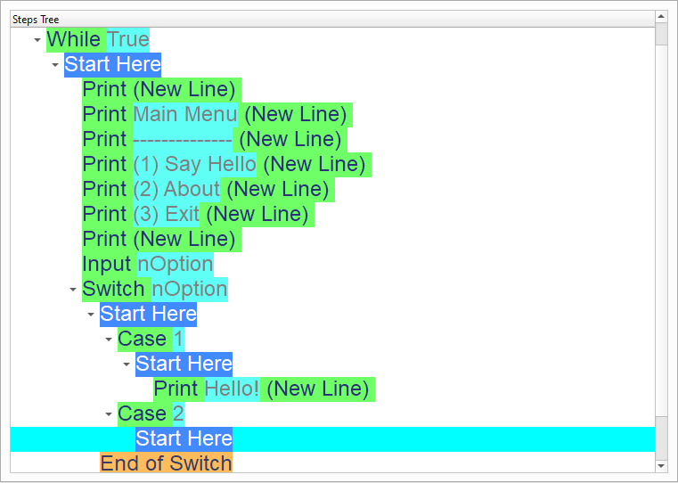


 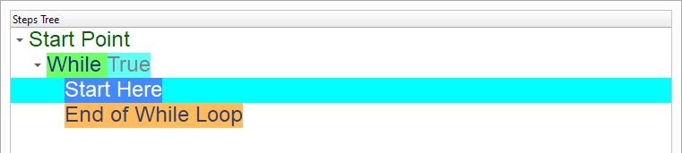
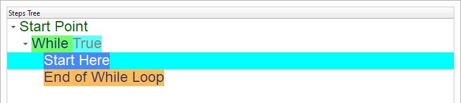


Select the (Shutdown) component
Using this component we can close our program!


Now we have the final Steps Tree in our program